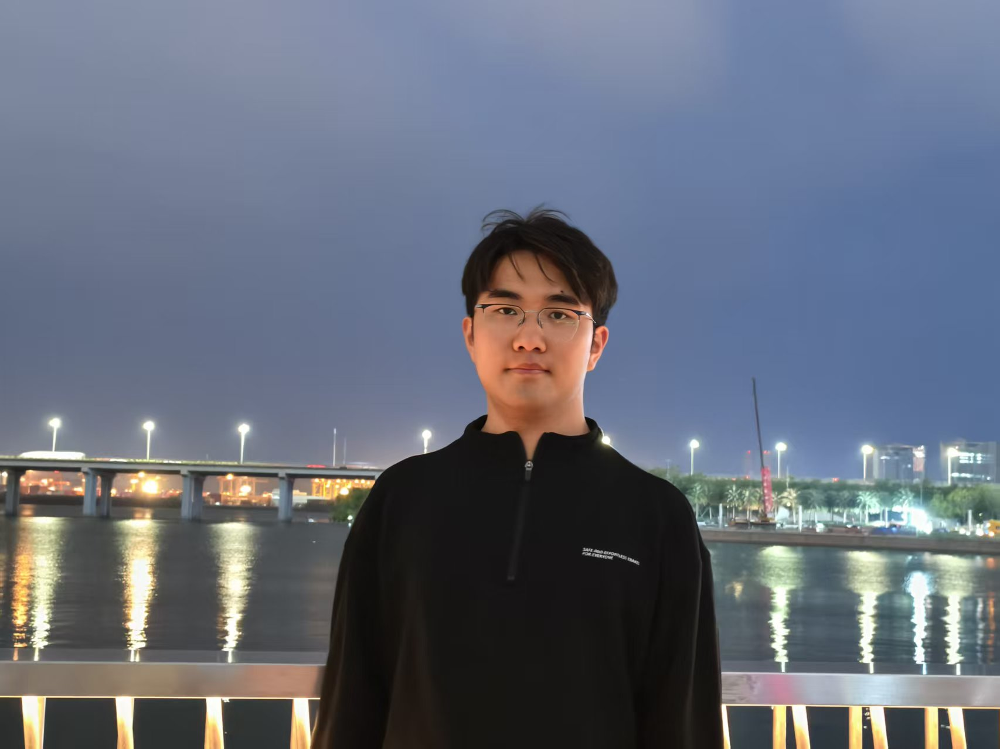
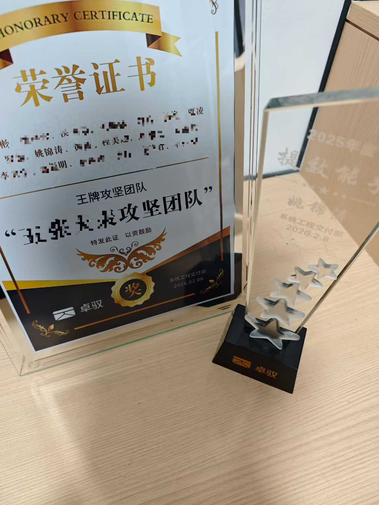
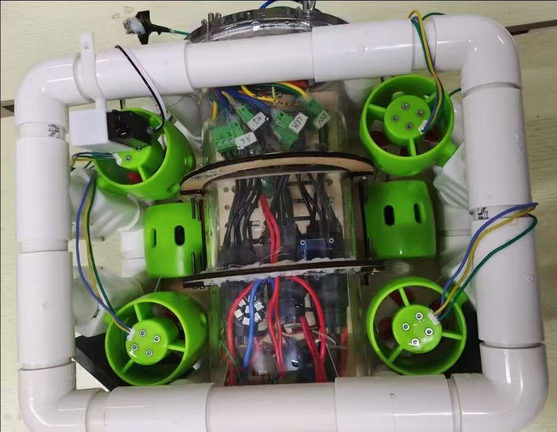

姚锦涛🎓 西南交通大学 · 电气工程与智能控制（本科） 🚗 卓驭科技（原大疆车载）· 智驾应用软件开发工程师、模块负责人 🚀 专注于嵌入式系统、分布式中间件与应用层开发 |
 |
关于我
你好，我是姚锦涛，西南交通大学电气工程与智能控制专业本科生， 曾任校电子科技协会会长。我的职业方向专注于嵌入式系统、Linux 应用开发与智能驾驶应用层软件。
大学期间，我参加了多项竞赛与创新项目，积累了 STM32、英飞凌 TC264、海思 Hi3516 等平台的开发经验。 曾获 RoboMaster 全国一等奖、全国大学生智能汽车竞赛全国二等奖 等多项省部级以上奖项。
我曾在大疆车载实习，担任嵌入式软件开发工程师，参与多款车型功能 BringUp、 车载通信协议适配与量产支持；排查字节对齐、枚举差异、编译优化等底层问题； 并运用 C++ 面向对象、多线程、动态内存等技术开发可视化日志工具下位机接口。
目前我在卓驭科技担任智驾应用软件开发工程师、模块负责人， 负责 6 + 款平台车、4 个 OEM 项目的智能泊车应用层开发。工作涵盖： 自动泊入/泊出/遥控泊车等核心模块的功能迭代与重构； 基于 dji_bag/ros_bag 的泊车应用层数据回灌能力建设，攻克时间同步与信号时序错乱问题，并打通 Simulink 模型在环仿真链路； 搭建自动测试与评测体系预期作为 PR 合入门禁，降低实车测试资源耗费； 主导智驾应用多仓库 AI 原生化改造，基于 Graphify 构建跨仓代码调用图谱，搭建 Agent 辅助体系与问题排查工具链。
我热衷于从底层硬件到上层应用的全栈工程实践，有大型软件项目的迭代、重构、配置管理与版本发布经验， 对基于 ROS 的分布式中间件、数据驱动及 AI 原生化软件开发有深入理解和落地经验。
教育背景
|
|
西南交通大学（211 / 双一流）电气工程学院电气工程与智能控制 · 本科 校电子科技协会会长（2023.09 - 2024.06） |
工作经历
卓驭科技智驾应用软件开发工程师、模块负责人
|


大疆车载（DJI Automotive）嵌入式软件开发工程师（实习）
|
项目经历




获奖荣誉
- 国家级 - 第二十三届 RoboMaster 机甲大师高校联盟赛步兵对抗赛 · 全国一等奖
- 国家级 - 第十八届全国大学生智能汽车竞赛独轮组 · 全国二等奖
- 国家级 - 第二十三届 RoboMaster 机甲大师超级对抗赛 · 全国二等奖
- 省部级 - 中国大学生工程实践与创新能力大赛智能+赛道 · 四川省一等奖
- 省部级 - 全国大学生电子设计竞赛 · 四川省二等奖
- 省部级 - 全国大学生嵌入式芯片与系统设计竞赛 · 西南赛区三等奖
- 省部级 - 大学生创新创业训练计划（水下巡检机器人）· 省级优秀结题
- 校级/工作 - 校大学生电子科技协会会长 · 任职评定：优秀
- 企业/工作 - 卓驭科技 · "提效能手"、"王牌攻坚团队"